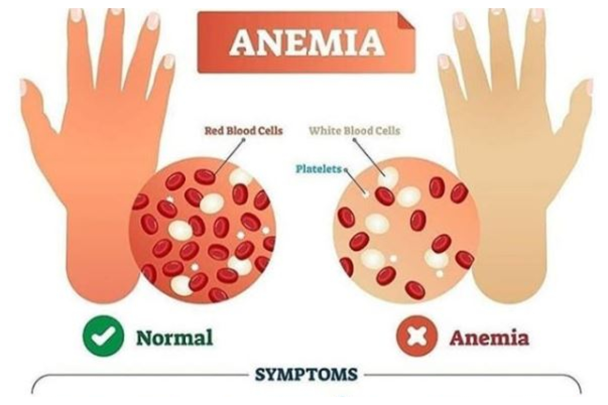

ANEMIA

- Dr. Vasant Lad says that people suffering from anemia should take a cup of yoghurt mixed with turmeric powder in the morning and at lunch.
- It also helps in expelling kapa tosha from the body.
- Probiotic foods may improve digestion and intestinal function. It contains good intestinal bacteria.
- Scientists have found that it increases the levels of vitamin B12 and iron.
- Patients with anemia can get RBC by taking yogurt.
- May improve the number and hemoglobin level. You can also drink curd whey.
- With green leaves Take lots of green vegetables on your plate daily.
- It is naturally rich in vitamins, minerals such as folate and iron.
- This is the best diet to treat anemia and iron deficiency.
- Greens, celery, mustard greens, broccoli, green leafy vegetables, etc.
- Drumstick soup is the best solution. Take a handful of drumstick leaf, boil it, strain it and drink it.
- Drumstick leaf stalks can also be made into soup and drunk.
- Rooted vegetables Root vegetables are rich in minerals.
- Continuous accumulation of this in the diet increases the number of blood cells.
- Carrots, beetroot, sweet potatoes, etc. are nutritious food items.
- This can be added to the daily quarterly rate. You can also drink this juice. Delicious beetroot juice.
- Delicious beetroot juice Take the required amount of beetroot and chop the skin. Beat it in a mixer and add two teaspoons of lemon juice and drink.
- It is an excellent source of iron, magnesium, calcium, vitamin A and folate.
- The first is to strengthen the immune system. Vitamin C is a nutrient that can help a lot. This will greatly help to keep the body strong
- In one study, women who took beetroot were found to have significantly improved hemoglobin levels in their body over the next 20 days.Take plenty of vitamin C. Anemia weakens the body's immune system. So first it can cause infections and inflammatory diseases.